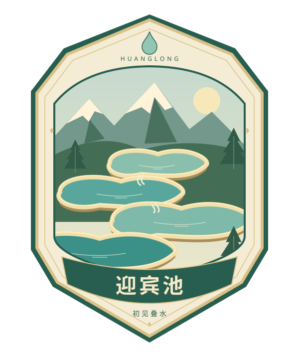
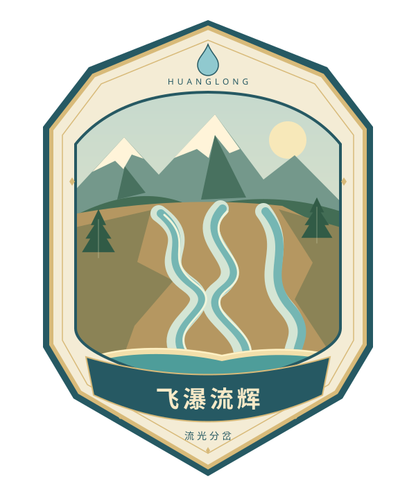
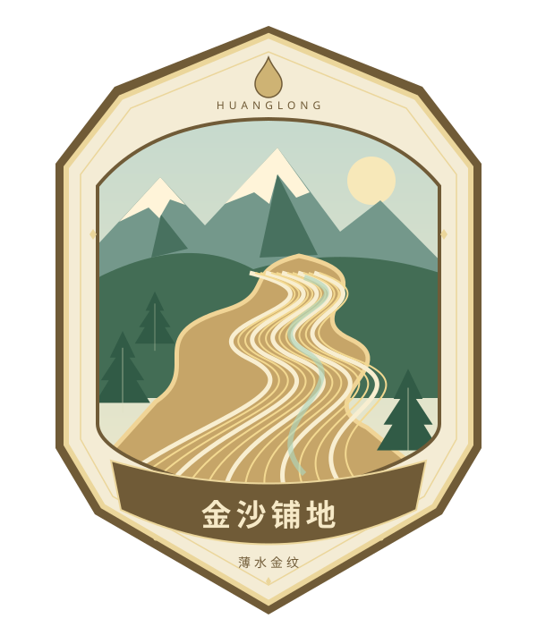
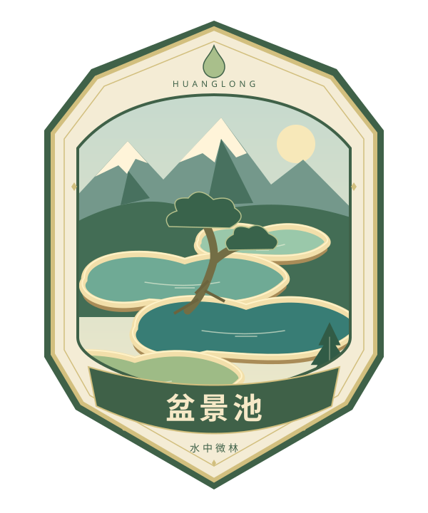
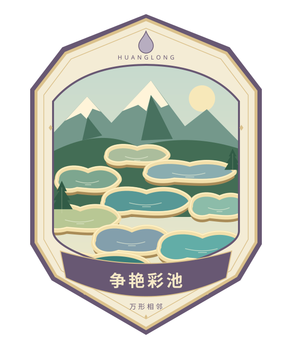
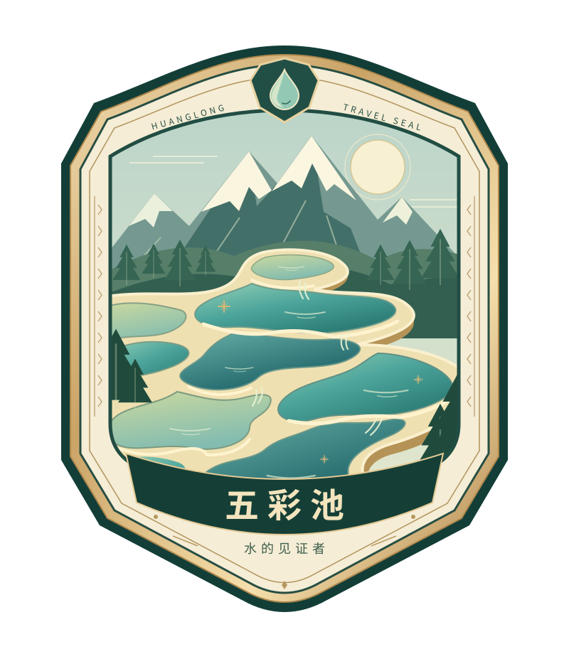
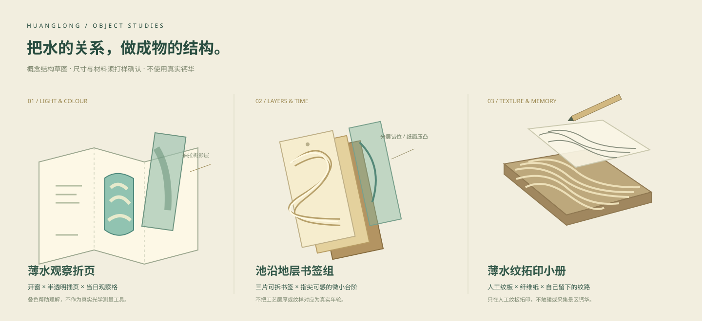

原创结构概念；当前仅为策划与设计方向，未进行实物打样。
黄龙山水护照：把观察带走
版本：2026-10-08 / 网页原型与合作讨论稿
适用对象：景区运营、自然教育、视觉设计、文创产品、前端开发团队
当前网页已具备数字打卡、实验、收藏与手账。线下赠品、售卖、工作人员核销、库存和账号服务均未上线。成本为内部规划假设，未经供应商报价。景源图形是原创艺术化表达，不是实测地形、官方标识或已获授权的官方商品。
1. 产品主张：收藏一次看懂风景的经历
游客常能记住“彩池很漂亮”，却不一定分清池沿、池底与水色的关系。黄龙的特别之处，在于缓慢形成的钙华与持续运动的水同时出现在眼前。护照把这种关系分成几次小发现：看薄水、比较水色、观察分流、理解沉积、记下一段池沿。
产品提供三种可以带走的东西：一枚对应具体地点的章，一条经过操作比较得来的观察，以及游客自己的记录。实体物品应延续其中一种关系，成为离园后还能使用、还能解释的小工具。独特性来自结构与使用方式，不能只依靠印一个景区名称。
不设置全景区竞速、不要求前往非开放地点、不以登高或走完全程作为奖励前提。不安排“错过今天就消失”的收藏焦虑。高海拔、体力、天气和接驳安排会改变游线，奖励应适应旅程。
2. 原型范围与正式运营边界
| 层级 |
当前网页行为 |
正式运营还需要什么 |
| 景点主章 |
六处主章；游客手动确认到达；旧记录继承；一次计数 |
关联实物时增加现场核验、账号、服务端凭证 |
| 既有风景印章 |
其他景点章和四章奖励继续保留 |
可按批次重新绘制，不强迫旧用户重做 |
| 观察实验 |
水色、坡面水流、CO₂与薄层三个可反复调节的实验 |
专业科普审校、现场可用性验证 |
| 主题纪念章 |
两站、三站、两站加一次实验，三种数字奖励 |
与实际开放游线核对 |
| 数字手账 |
最多12页；每页6枚；标题/日期/320字备注/纸色；拖动、大小、旋转、移除；逐页PNG和SVG导出 |
账号同步、跨设备恢复、备份策略 |
| 线下联动 |
仅本策划，不展示可兑真实奖品的券 |
景区协议、打样、点位、库存、价格与核销服务 |
3. 收集规则
3.1 三类收藏物
- 到达章：迎宾池、飞瀑流辉、金沙铺地、盆景池、争艳彩池、五彩池。每地点一枚，在当前设备记录中保留；顺序自由。原型手动确认，不声称定位验真。厕所、商店等设施不计主章。
- 观察贴纸：每个实验三种不同对照全部记录后获得一枚。先在任意关联景点确认到达。预习不计正式观察，不发到达章；重复记录、重玩、刷新不重复发奖。集齐后仍可实验。
- 主题纪念章：依据已有记录计算，自动进入手账素材。切换主题不移除已满足的奖励，不另设限时领取按钮。
| 主题 |
条件 |
数字奖励 |
理由 |
| 慢看两站 |
六主章任意2枚 |
山水初见 |
时间有限、陪同或折返游客也能完成 |
| 山水漫游 |
六主章任意3枚 |
山水同行 |
有游览广度，不要求全程 |
| 自然观察 |
六主章任意2枚＋任一实验贴纸 |
细节发现者 |
奖励主动观察，不奖励背答案 |
原有四章水滴奖励保持独立。四章表达水流、溶解、出露与沉积的叙事，新实验提供条件对照。两套体验互补，“玩过四章”不等于“完成三个新实验”。
3.2 打卡与离站分离
打卡记录“我来过”；原游线的“逛完了”记录下一站进度。护照打卡不跳过行程，不替游客完成步行。缩短路线、改用索道、重排选择都不删除收藏。
3.3 异常与运营原则
- 重复地点：显示已收好，计数不变。
- 未到站完成预习：解释现象，不发正式收藏。
- 存储被拒绝或已满：本次继续使用，明确提示导出，不显示假“已保存”。
- 换设备/清除数据：当前不能恢复；正式版通过账号或凭证恢复，不用隐蔽设备指纹追踪。
- 临时封闭：运营版可替换同等难度的主题点，不导流至封闭区；已获得的数字纪念不撤回。
- 实物规则改变：以券发行时条款为准，不在兑换时临时增加消费门槛。
4. 小游戏：操作、响应、对照、解释
每个实验从一个具体问题开始。游客改变条件，画面随手变化；点击“记录这一刻”保留对照。三种对照集齐后形成解释、获得贴纸，并收到可以在现场继续观察的小提示。
不依赖实时传感器，不要求越过栈道，不用摄像头识别作唯一通关方式。初次体验约一分钟，可中断。减少动态效果时仍能看懂画面。各滑杆是定性示意，不能当测量刻度。
4.1 水色不是颜料
关联：五彩池、争艳彩池、盆景池。
输入：示意水深与清澈程度。
响应：剖面池底深度、水色、池底可见程度、悬浮颗粒。
对照：清澈浅水 → 保持清澈增加深度 → 保持较深降低清澈度。
让游客保持一个条件、只改另一个。奖励“完成比较”，不奖励最蓝、最美的参数。真实池色同时受吸收、散射、池底、光线、角度与周围反射影响，不能解释为深度唯一决定颜色。
贴纸“一池水色”：三个色样与两个叠池。它是配色纪念，不是水质检测或现场水深标尺。
4.2 一层水，几种走法
关联：金沙铺地、飞瀑流辉、迎宾池。
输入：坡度与来水量。
响应：坡面剖面、流动线条、薄水/集中落差；断水仍保留岩面。
对照：中等来水缓坡 → 相近来水陡坡 → 关闭来水。
最后一步使游客分开理解瞬时水流与积累地貌。不能把金沙解释成沙，也不能以刮取钙华作为奖励动作。没有计算真实流速、流量或侵蚀速率；现实地形比示意剖面复杂。
贴纸“薄水金纹”：平行水纹穿过金色滩面，采用纵向展开的曲线，不复用通用瀑布图标。
4.3 水离开，石留下
关联：五彩池、争艳彩池、金沙铺地。
输入：CO₂逸散条件与示意时间。
响应：气体逸出、浅色碳酸钙薄层逐渐累积。
对照：逸散弱、时间长 → 逸散强、刚开始 → 逸散强、时间长。
承接四章3D，回答“条件为何重要”和“变化为何需要积累”。假设持续有含钙来水且适合沉积，只展示一个机制；温度、生物、水化学等因素不被假装为已计算。不得给动画标未经证实的“一秒等于一百年”。
贴纸“时间薄片”：层叠截面与上方水滴表达固体留下。水滴不变成岩石角色，避免“水直接变石头”的误解。
4.4 学习效果怎么验证
参与者操作前预测一次变化；操作后用自己的话说出“我改了什么、看见什么、这个实验不能说明什么”。若出现“最蓝就是水质最好”等集中误解，应改画面与反馈，不用堆解释文字掩盖。
先找12—18名不同同行方式和年龄段的游客做可用性观察：记录卡住的步骤、是否主动阅读解释、是否能举现场例子。这是小样本试用，不能外推为全体游客统计画像。
5. 主章美术与生产母版指导
原稿在 assets/passport/：6主章、3贴纸、3主题章。纯SVG，无外部图片、无脚本。五彩池沿用已完成的手绘原稿，其余五枚新增。
| 主章 |
识别特征 |
避免 |
| 迎宾池·初见叠水 |
浅池高低相接，小溢流 |
通用圆水塘 |
| 飞瀑流辉·流光分岔 |
金色岩壁上的多束分流、复合水线 |
一条直落蓝带 |
| 金沙铺地·薄水金纹 |
宽滩、贴面细流、金色纵纹 |
沙滩、金矿 |
| 盆景池·水中微林 |
树根、池沿、水的包绕 |
普通松树徽章 |
| 争艳彩池·万形相邻 |
多个不规则池相邻，多样形态与色块 |
五彩池简单换色 |
| 五彩池·水的见证者 |
远山、林缘、曲折池群、连续浅色池沿 |
冒充实测地图 |
统一使用纸白、深绿、矿物青和少量暖金。暖金表达钙华与边缘秩序，不用大面积镜面、爆闪、皇冠和虚构稀有度。顶部水滴是连续故事锚点，数字编号不能压住景观。
网页插画可保留细节，小尺寸实体须减线。文字目前可编辑；交付生产前核验字库授权并转曲。SVG RGB配色要按纸张、油墨打样，不能用未经打样的CMYK数值保证颜色。官方标志、商标、寺庙或文化元素另行确认许可与审校。
6. 数字手账
让游客决定标题、日期、短记与布局。同一章能用于多个页面，但不增加打卡数。章、贴纸、主题徽记使用不同外形，保留纸面空白。
点素材加入、拖位置，显式调整大小/旋转，也能键盘微调。每页6枚、最多12页，减少本机存储与手机绘制压力。PNG宽1440px、正常页高2080px，长备注自动加高；SVG与PNG用同一排版，不截掉文字。导出期间的编辑会使旧结果失效，避免保存旧画面。
当前不上传文字、不采集游客照片。以后增加照片时应让用户主动选择、明确上传范围和删除方式；不默认发送整个相册。正式微信版再接相册保存与分享卡能力。
7. 实体系列：结构来自黄龙
7.1 首推赠品：薄水观察折页
价值：离园后仍可使用的观察工具。包装本身就是观察页，不制造一层立即丢弃的礼盒。
结构：展开约105×420mm，四折为105×105mm；300g左右耐折未涂布纸、圆角。中间池形开窗，夹一张可抽拉的半透明薄纸。把“浅池底”“深色水层”“树影”按顺序叠放，看到色彩关系改变。下方留三格，记录当天水色、观察位置与日期。
独特性：抽拉对应多因素水色，离开黄龙后仍能用于框取自然色。半透明叠色是理解工具，并非真实光学等价实验，卡上写明。不能宣称是一张水质检测试纸。
赠品联动建议：任意两处经现场确认的主章领取基础折页，完成观察实验再加一张对应插页。免费参与不附加购买条件。一次活动只领一次，身份依据由景区确认。
生产：孔位不割手、抽拉限位、不易脱落；优先纸结构。测试湿手摩擦和重复折叠，不凭空声称防水。不用塑料盲袋。试点每100件抽检尺寸、错位、文字、气味、装配；后续按制造协议调整。
7.2 核心纪念品：池沿地层书签组
价值：反复摸到“微小层次积累”的阅读用品，不使用真实钙华。
结构：3片约35×120mm，分别承担池沿轮廓、薄层剖面、水纹半透明层。优先不同厚度纸材，压凹/压凸；透明材料需按回收条件另选。顶端错位2—3mm，合起出现连续台阶，拆开各自可作书签。背面三句连读：“水带来溶解物”“CO₂逐渐逸出”“适当条件下，碳酸钙积累”。
独特性：手指能感到微小台阶，书页里错位的三片对应时间积累。纹样取原创池沿曲线，不伪造某池实测年轮；毫米高度不对应真实年限。
视觉工艺：自然纸色加青灰一专色，池沿用压凸，不满版亮膜。钝角。纸厚与压凸高度需测试，不压穿、不刮伤书页。背面留20mm手写日期。二维码藏纸套内侧，离线也能读懂实物。
联动：自然观察主题获得纸套上的一次旅行压印；书签本体可常规销售。免费章和消费分开，不让游客以为游戏通关必须消费。
7.3 延伸商品：薄水纹拓印小册
价值：回家还能继续的观察手作，适合家庭和自然教育课程。
结构：90×120mm左右人工浅浮雕纹板、6张纤维纸、折页说明。纹板是原创金沙薄水曲线与池沿局部，不能直接复制未授权图案。用铅笔侧锋轻擦，浅深纹路表达宽滩与小落差。铅笔可自备，减少配件。
独特性：动作是“观察后留下纹理”，不鼓励在真实地貌上拓印。显著注明“只在此人工纹板上拓印；不得触摸、拓印、刮取景区钙华”。现场试用桌设游客中心，不设池沿栈道。
工艺：纸浆模塑、木基材浅雕等做对比样；不使用未处理树皮、脱落微颗粒、尖角或“景区原石”。深度经铅笔拓印验证，不凭屏幕效果定模。若按儿童用品售卖，应按实际适用标准评估材料、小件、年龄标识，策划稿不冒充认证。
7.4 小批量服务：个人旅程折册
把自选标题、两三枚章和观察句印成A6或相近尺寸折册，末页留空“下次还想看”。出口按需打印，减少预印与季节过剩。
打印前确认预览、费用、纸张、个人文字范围。文件短期留存、可删除；员工不把备注或照片另作宣传。排版独立预检，不能直接缩小手机长图导致字不可读。
8. 商品共同要求
- 能说清“黄龙为什么适合这样做”：至少对应一种地貌结构、水的行为或现场观察。
- 图案、结构、使用至少两项有关。通用杯子贴景区图不作为本项目特色首发。
- 不卖真实钙华/池水/植物，不暗示游客应当采集。
- 若扩展地方文化系列，邀请当地文化主体参与与授权，不随意使用宗教符号或编造故事。
- 不用盲盒概率、隐藏款、高海拔难任务推进消费。
- 区分艺术化图案、工艺纹样、测绘资料、现场状态。每句科普文案只表达一个清楚的事实。
9. 领取点与核销（拟议）
先选一个游客自然经过的服务点试点，由景区现场确认出口和接驳流向。不默认能折返已关闭入口，不把领奖点放在额外爬升处。页面展示领取点、时间、库存、有效期、收费与否，由运营维护真实状态。
正式流程：现场确认 → 服务端判断资格 → 游客主动申请券 → 暂占库存 → 短时动态码 → 工作人员扫描 → 检查券与点位 → 同一事务核销、扣库存 → 交付、回执。
9.1 最小后台数据
| 对象 |
必要字段与职责 |
| CheckIn |
身份、地点、时间、确认方式和核验来源；不默认保存全程轨迹 |
| Entitlement |
活动、规则版本、用户、奖品、数量、截止时间 |
| Voucher |
唯一ID、已发行/待核销/已核销/过期/取消、动态码有效期 |
| StockLedger |
入库、预留、释放、核销、退回/报损，日结账实核对 |
| Redemption |
券、领取点、工作人员、时间、幂等请求ID |
同资格同奖品只发一张有效券。原子事务验证未核销且库存有效；按钮变灰不能防重领。不凭游客截图直接发放。停网使用事先批准的纸质异常单、唯一流水号和数量上限，恢复后补录对账；没有流程前不宣称离线可兑。
9.2 异常处理
| 情况 |
处理 |
| 缺货 |
停止新券，展示状态；优先履约已预留券或经游客同意替换 |
| 服务点关闭 |
给替代点或延长已发券期限，不要求冒险折返 |
| 重复扫描 |
返回原回执，不再扣库存 |
| 无手机/无网 |
纸质观察路线与同等基础纪念，不剥夺参与 |
| 手机无电 |
按预设门票/活动凭证处理，不让一线临场猜身份 |
| 瑕疵赠品 |
回收登记换货，不消耗第二次资格 |
10. 试点成本假设与节奏
人民币，仅内部量级估算，非供应商报价，不含税运、人员、设备、授权、损耗等完整成本。至少向两家供应商询样后再定价。
| 项目 |
假设数量 |
单件制造目标 |
小计范围 |
| 薄水观察折页 |
300 |
4—8元 |
1,200—2,400元 |
| 半透明插页 |
150 |
1—3元 |
150—450元 |
| 池沿书签组 |
50 |
12—25元 |
600—1,250元 |
| 人工纹板拓印套 |
20 |
20—45元 |
400—900元 |
| 合计 |
— |
— |
2,350—5,000元 |
另列预算：设计与科普审校、打样模具、陈列、员工培训、核销软件、终端、运输、包装、报损税费。不能将表内金额宣传为全部落地成本。
第一轮用当前原型观察12—18人；第二轮核对路线与科普，完成折页和书签样；第三轮一个点位、小批量、明确结束日期运行。先验证领取与体验价值，再扩大品类和点位。
11. 验收与成效
- 可用性：能否独立打卡、找到新对照、成功保存；记录失败原因，不只报完成率。
- 理解：前后开放问题，检查“水色只看深度”“水变石头”等误解；公开样本与问法。
- 现场影响：是否停堵、边走边玩。必要时引导休息区使用，缩短任务。
- 收藏价值：是否自愿改文字、离园后是否回看或导出。采集方法须说明并征得同意。
- 运营：领取率、扫描耗时、账物差异、缺货换货。建议重复核销0、日结一致；其他阈值先取基线。
- 商品：游客能否解释结构对应的现象；折页耐用、书签不伤纸、拓印易操作。仅问颜值不足以验收。
12. 依据与审校
景观识别沿用项目中2026-09-18至09-20整理的官网资料。本轮未重新抓取，不代表实时开放信息：
科学解释为通用机制简化，未用现场监测参数、尚未经黄龙自然教育团队逐句审校。正式出版前由地质/水文专业人员核对术语、因果边界与现场例子。文创、预算、兑换规则是本次原创建议，不是景区已批准计划。
合作评审需要落实：服务点在哪里、何处稳定开放、如何核验、谁审科普、谁承担成本、无手机与缺货怎么办。在这些决定落地前，网页保持数字体验即可。